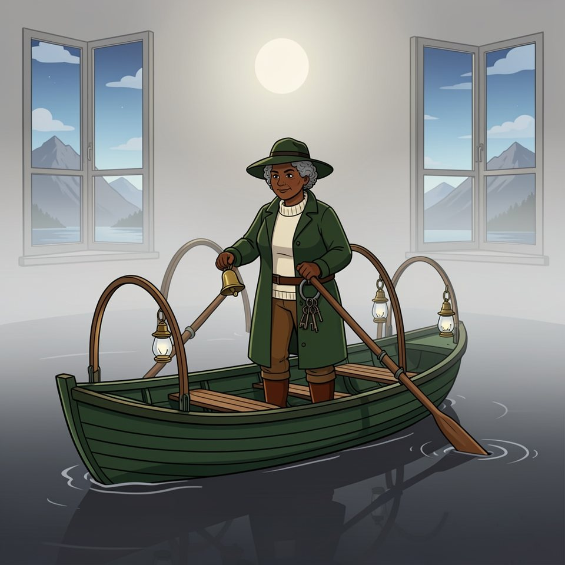

Titistoire › Les Galaxies (8-10 ans)
La lanterne qui pâlit
Haute-Lanterne, épisode 6 sur 8 : un feuilleton à énigmes dans un vieux château-phare au milieu d'un lac.

▶ Écouter et regarder l'histoire
Gratuit, sans inscription : la voix lit, le texte suit mot à mot, les images tournent comme dans un album.
Le texte de l'histoire
Le vingt-six, le brouillard était si épais que Zora traversa le lac en sonnant sa cloche, et trouva le rocher à l'oreille. « Je l'ai entendu venir », déclara-t-elle en amarrant la Luciole, sans plus d'émotion. Tout en haut de la tour, la Grande Lanterne n'était plus qu'une tache pâle. Il lui restait six nuits.
Les six de la carte le savaient mieux que personne. Ils avaient trouvé la chambre aux deux fenêtres, la Première Lanterne, et la seule nuit où l'on pouvait la veiller d'un soleil à l'autre : celle du trente et un. Il ne leur manquait qu'une vérité, assez grande, qu'un Levant et un Couchant diraient d'une seule voix.
Le château, lui, préparait ses trois cents ans. On astiquait les cuivres, Trait compris. Zora peignait la pelouse. Dans la salle des Horloges, Miss Ada fit accrocher deux vieux portraits : Dame Mira côté Levant, Maître Tarek côté Couchant, chacun tourné vers son mur. « On les a toujours mis dos à dos. C'est l'usage. Je n'ai jamais su s'il était bon. »
Sous les portraits, les deux ailes cherchaient leur vérité. « La soupe est tiède », proposa Maya. C'était vrai, et c'était petit. « Le brouillard est épais. » Petit aussi. Tom calcula qu'à vingt secondes la phrase, il en faudrait deux mille pour tenir jusqu'au matin. Sami déclara qu'il ne connaissait pas deux mille choses.
« Il faut une vérité de trois cents ans, trancha Kenza. Il n'y en a qu'une, et elle est dans le livre. Ce soir-là, quelqu'un a menti, la lanterne s'est éteinte, et le château a été coupé en deux. Disons-le ensemble, et la flamme tiendra cent nuits. — Parfait, approuva Elias. Disons-le. Qui a menti ? »
C'était toute la question. Depuis qu'on avait ouvert le livre, chaque aile avait sa réponse, et la tenait pour certaine. Nul ne l'avait encore posée tout haut, par-dessus le Trait. Kenza décrocha une lanterne allumée et la posa sur la ligne de cuivre, juste entre les deux portraits. « Que chacun dise ce qu'il sait. Elle jugera. »
Elias s'avança le premier, comme toujours. « Ce soir-là, Maître Tarek a menti à Dame Mira. » Il avait prononcé le nom sans s'étrangler. La flamme ne bougea pas. « Tu vois ! — Je vois que c'est mon tour. » Kenza se redressa de toute sa taille. « Ce soir-là, Dame Mira a menti à Maître Tarek. »
La flamme ne bougea pas davantage. Elle brûlait, droite et tranquille, comme si l'on venait de lui apprendre qu'il pleuvait. Il y eut un grand silence, des deux côtés du Trait. Sur leur mur, les deux portraits regardaient ailleurs.
« Ta lanterne triche, lâcha Elias. — C'est la même lanterne. — Alors c'est toi. Tu as trouvé un moyen de mentir devant elle. — Moi ? Le Levant ment devant une flamme, et c'est la pire tricherie depuis trois cents ans ! » Les voix montaient. Au mur, deux ou trois pendules sonnèrent n'importe quoi, comme font les pendules quand on crie.
« Une lanterne ne triche pas ! protesta Tom, qui ne supportait pas qu'on accuse une chose exacte. Demandez à Nour. Elle n'a jamais pu lui mentir. Même le premier soir, quand elle venait de voir les deux moitiés et qu'elle n'avait le droit de le dire à personne ! » Il s'arrêta net. Tom n'avait jamais su garder une chose pour lui, pas même celles que Sami lui confiait à l'heure de la sieste.
Kenza se tourna vers Nour, très lentement. « Le premier soir. Quand je t'ai montré notre moitié, tu avais déjà vu la leur. Tu savais, et tu m'as laissée te faire jurer. » Nour regarda la lanterne. Elle aurait donné sa valise pour une phrase polie. Il en venait dix, et pas une n'était vraie. « Oui », répondit-elle.
« J'ai juré de n'en parler à personne. Je n'en ai parlé à personne. — Non. Tu t'es assise à côté de Sami, et tu as posé une question à Tom. » Kenza ne criait plus. C'était pire. « Tu as tenu ta parole, mais tout juste : assez pour qu'on n'ait rien à te reprocher. C'est très bien élevé. Ce n'est pas honnête. »
« Et nous ? intervint Elias. Elle est montée au Perchoir. Elle a vu notre barque. Deux jours après, notre barque était chez eux. Règle numéro un : on ne montre plus rien à quelqu'un qui n'a pas d'écharpe. » Nour ouvrit la bouche pour répondre que c'était très gentil. Rien ne sortit. Même cela, elle ne le pouvait plus.
À l'heure du thé, elle ne trouva de place à aucune table. Maître Idris, sans un mot, posa un tabouret sur le Trait, comme le premier jour. Le premier jour, cela avait fait sourire. Nour but son thé un coude dans chaque camp, et aucun des deux camps ne lui passa la marmelade.
Miss Ada vint à passer, un chiffon à la main. Elle considéra la ligne de cuivre, puis les deux tablées qui se tournaient le dos. « Le Trait n'a jamais autant brillé. On s'y verrait. » Elle ne précisa pas si c'était un compliment. Elle versa du thé à Nour, y mit deux sucres sans rien demander, et s'en fut.
Tom ne toucha pas à son pain grillé. Il compta les miettes : quarante et une, et autant de remords. Sous la table, une botte délacée vint se poser contre la sienne, en travers du Trait. C'était Sami. Il ne parlait pas au Levant. Il n'avait donc rien dit.
Ce soir-là, à la Tanière, on se coucha dans un silence de coffre fermé. La vérité du soir de Kenza fut : « J'aurais voulu qu'elle me le dise. » La flamme vint tout de suite. Kenza lui tourna le dos, comme à une lanterne qui en sait trop. Sami chercha quelque chose, et ne trouva que : « Je n'aime pas quand on crie. » C'était vrai aussi.
Nour s'assit sur son lit, sa lanterne sur les genoux. Elle n'essaya même pas la politesse. « Je voulais qu'ils rapprochent les deux moitiés. Je l'ai fait exprès. » La flamme s'alluma. Elle chercha une autre vérité, plus douce, pour se consoler. Celle qui vint fut : « Je voudrais rentrer chez moi. » La flamme grandit. Nour la regarda grandir sans rien dire.
Au Perchoir, Tom avoua : « J'ai trop parlé. » Elias grommela : « La lanterne n'a pas pâli quand Kenza a parlé. Je l'ai vu. » Il n'aimait pas cette vérité-là, et sa flamme brûla de travers. Maya ouvrit la bouche, puis la referma. Depuis le matin, quelque chose la tracassait, et ce n'était pas une histoire.
Le vingt-sept, il plut de nouveau, et le banc du Trait n'eut que deux occupants : Sami, couché, et Tom, assis au bord, la tête basse. « Tu ne devrais pas me parler. Tout est de ma faute. — Je ne te parle pas. Je dors. Tadam. » Sami souleva un coin de parapluie. « Tu as dit vrai. Tu l'as dit fort, voilà tout. Viens dessous, tu mouilles mon banc. »
Le couloir était revenu. Les deux ailes y entrèrent chacune par son bout, sans se saluer. Devant la petite porte, il fallut pourtant s'agenouiller ensemble. « Dame Mira et Maître Tarek », chuchotèrent Elias et Kenza du bout des lèvres, en regardant ailleurs. La porte s'ouvrit quand même. Elle n'était pas rancunière.
Dans la chambre, Elias tira de sa poche un morceau de craie. Il partit du seuil, passa sous la table, entre les deux tabourets, et traça un trait bien droit jusqu'au mur d'en face. « Moitié Levant, moitié Couchant. C'est la fenêtre qui décide. » Kenza approuva d'un signe. Sur ce point au moins, ils étaient d'accord.
On écarta les tabourets, un de chaque côté. On poussa la table, pour que le trait la coupe par le milieu. La Première Lanterne resta dessus, pile sur la craie, une anse dans chaque camp. Les Levants s'assirent à l'est, les Couchants à l'ouest. Nour demeura sur le seuil. Le trait partait de ses souliers.
Maya regardait la craie. Il lui semblait avoir déjà entendu cette histoire. Deux amis, une chambre, un soir, un trait tiré d'un mur à l'autre. Elle se tourna vers Tom. Tom avait compris aussi : il ne mesurait pas le trait. C'était bien la première ligne droite, à Haute-Lanterne, qu'il ne mesurait pas.
Le soir tomba derrière les volets clos. C'était l'heure d'essayer, et personne n'essaya. Elias tenait son anse. Kenza tenait la sienne. Aucun des deux n'avait une phrase que l'autre acceptait de dire. La Première Lanterne resta noire, entre eux. Par la fente d'un volet, on apercevait le reflet de la Grande sur le lac. Il ne dépassait plus le pied du rocher.
Avant de sortir, Sami posa son coussin par terre, à cheval sur la craie, par habitude. Elias fit observer qu'il dépassait de leur côté. Sami le regarda longuement, de ses deux yeux ouverts. « Mesure-le. » Elias chercha Tom du regard. Tom contemplait le plafond. Personne ne mesura rien.
Ils partirent bien avant minuit, chacun par son bout de couloir. Nour sortit la dernière. Avant de refermer la petite porte, elle regarda la chambre : la table coupée, les tabourets écartés, la craie toute fraîche. Trois cents ans plus tôt, deux amis s'étaient assis là, côte à côte. Il avait suffi d'un soir.
Cette nuit-là, Maya ne trouva pas sa vérité du soir. Elle essaya : « Imagine… » La lanterne resta noire. Une histoire n'est pas un mensonge ; ce n'est pas non plus une vérité. Elle chercha autre chose, les yeux au plafond. Ce qui vint, elle ne l'avait pas inventé. « Je ne sais plus qui a raison. » La flamme monta d'un coup.
« Elias. Tu dors ? — Un chef ne dort pas. Il réfléchit les yeux fermés. — Quand tu as dit que Maître Tarek avait menti, tu le croyais ? — Évidemment. — Et Kenza, quand elle a dit que c'était Dame Mira, elle avait l'air de tricher ? » Elias mit du temps à répondre. Il n'aimait pas la réponse. « Non. Elle avait l'air de Kenza. »
Tom se redressa dans son lit. Quelque chose lui chatouillait la mémoire : une échelle, des nombres, une lanterne qui ne bronchait pas. Il était trop fatigué pour l'attraper. « Une lanterne ne triche pas, répéta-t-il seulement. Elle est restée allumée pour les deux. Donc… » Il s'endormit sur son donc. Le Levant se couche tôt.
Comment une lanterne franche peut-elle rester allumée devant deux histoires qui se contredisent ? À la Tanière, Nour y songeait aussi, les yeux ouverts. Dans la salle des Horloges, les deux portraits se tournaient le dos, et le tabouret était resté sur le Trait. L'horloge de personne avança d'un cran. Tout en haut, la Grande Lanterne cligna, et se rouvrit à peine. Il en restait quatre.
Épisode suivant : Imagine